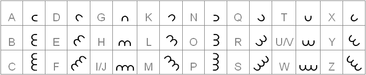
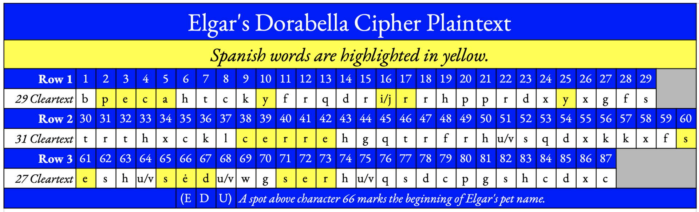

Sources & gallery
Everything I read, the images with their licences, and my own working material.
What I read
Primary research
| source | what is in it |
|---|---|
| Hauer et al., HistoCrypt 2021 (PDF) | Substitution solvers, language identification over 380 languages, a text-vs-music classifier. Concludes: not a simple monoalphabetic substitution of English; probably language, not music; probably not a hoax. I kept an extracted copy for reference while building the lab. |
| Wase, Dorabella unMASCed, Cryptologia 2023 | Establishes a baseline first: solvers hit 98.7% on English and 98.6% on Latin at 87 characters, then fail here. The cleanest negative result in the literature — and the one my matched-effort run reproduces. |
| Dorabella Cipher as Musical Inspiration (arXiv) | The music-hypothesis line of argument. |
Reference
| source | what is in it |
|---|---|
| Wikipedia — Dorabella Cipher | Line lengths, symbol set, claimed solutions, image scans. |
| Wikipedia — Edward Elgar | Biography. |
| Wikipedia — Enigma Variations | The friendship map: all fourteen dedicatees. |
| Wikipedia — Nihilist cipher | How the cipher Elgar broke in 1896 works. |
| The Cipher Foundation | The “3 versions each of 8 rotated E-shapes” reading, and the key applied to the note — the BLTACE… string my transcription is validated against. |
| Dora M. Powell (née Penny), Edward Elgar: Memories of a Variation, 1937 | The memoir that preserved the cipher after the original was lost. |
Ongoing investigation
| source | what is in it |
|---|---|
| Cipher Mysteries — Dorabella index | Nick Pelling's running coverage; the most consistently sceptical source. |
| Cipher Mysteries — Elgar's other ciphertexts | The Liszt fragment, the Courage cards, the 1920s notebook, and the known plaintexts. |
| Cipher Mysteries — 2025 update | The Bartlett and Menkins claims; the Royal College of Music diaries plan. |
| benzedrine.ch — clues or red herrings | An alternative 24-symbol key and transcription, plus structural observations — and the same naming convention as mine (a glyph is named by its open side). |
| Robert Padgett — Elgar's Enigma Theme Unmasked | The contested maximal reading of the Variations, and cleartext tables for Dorabella. |
Context and colour
| source | what is in it |
|---|---|
| Eric Sams — Elgar's Cipher Letter to Dorabella | The 1970 Musical Times attempt, from the author's own archive. |
| Nautilus — The Artist of the Unbreakable Code | The Schooling challenge and Elgar's personality (not the box, the cards or the notebooks). |
| Schneier on Security — Edward Elgar's Ciphers | A short overview from a cryptographer. |
Where sources conflict — Dora's age, the date of the Liszt fragment, Gazette or Magazine, box or floor — the conflict is stated on the page concerned rather than silently resolved.
Texts behind the language models
Public-domain books from Project Gutenberg. Only the packed n-gram tables were used by the tools, not the books.
German — 2.5 M letters
- Goethe, Die Leiden des jungen Werther (epistolary, 1774)
- Fontane, Effi Briest (1895)
- Mann, Buddenbrooks (1901)
- Kafka, Die Verwandlung (1915)
- Nietzsche, Also sprach Zarathustra (1883)
- Goethe, Faust I (1808)
Chosen to lean towards letters and domestic prose where possible; umlauts folded (ä → ae) the way a period English reader would transliterate them.
Period correspondence — 3 M letters
- Collingwood, Life and Letters of Lewis Carroll (1898)
- Letters of Charles Dickens, vols 1–3
- George Eliot's Life, as Related in Her Letters, vols 1–3
- Life and Letters of Charles Darwin, vol 1
- The Letters of Jane Austen
- Letters of John Keats to His Family and Friends
- Business Correspondence, vol 1 · Crowther, How to Write Letters · The Gentleman's Model Letter-writer · The New Century Standard Letter-Writer
- Lorimer, Letters from a Self-Made Merchant to His Son · Chesterfield, Letters to His Son
Filtered to the sentences that read like correspondence — first and second person, direct address — dropping the biographers' narration.
Document gallery
Images from Wikimedia Commons, each with its licence and author. Files marked link are not copied here — follow the link to see them on Commons.

{kind=link}

{kind=link}

{kind=link}

{kind=link}

{kind=link}

{kind=link}

{kind=link}
| not copied | licence | author | |
|---|---|---|---|
| DorabellaCipherElgarFont.png — the orientation of all the symbols | CC BY-SA 4.0 | Skaifaya | link |
| DorabellaKey2.png — the key graphic, avoiding font problems | CC BY-SA 4.0 | Skaifaya | link |
{kind=link}
{kind=link}
The 1897 document itself is long out of copyright. Individual scans and derived diagrams are not necessarily — several here are CC BY or CC BY-SA, shown unmodified with attribution, and require attribution if you reuse them. Licence texts: CC BY 3.0 · CC BY-SA 4.0.
My own working images


Two photos of antique compasses (8/16-point and 32-point cards) were part of my working folder as inspiration for the snowflake idea. They are third-party photographs of unknown licence, so they are described on [06] rather than reproduced; the compass drawing there is my own.
This project's own files
- transcription
- my draw.io diagram →
lab/transcription.py(three readings, the nine ambiguities, five circular corrections) - lab
align,repair,signif(validation) ·analysis,structure,run_structure(key-free tests) ·solver,run_solve,run_final,run_matched(attacks) ·crib,hypotheses,languages,model_prior·holdout,bakeoff,odds(calibration) ·crosscheck,rowcheck,snowflake_test(engine proofs)- toolkit
core.js(the polar-key engine) ·ui.js(glyph rendering) ·score.js(models, annealer, statistics) ·search.js,sweep.js(key hunts) ·recipe.js,session.js·transpose.js,strops.js- hunt
server/dorabella_hunt.py,run.sh, an Ubuntu installer and systemd units ·dashboard/(status page and server)- on this site
assets/core.jsandassets/ui.jsare the toolkit's own files, unchanged;toolkit/holds the built interactive tools